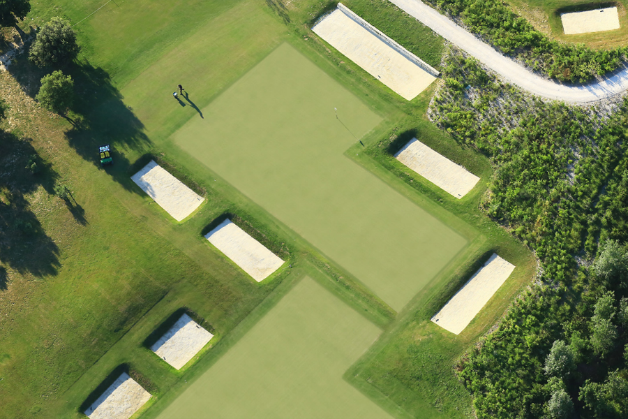

Le Golf de Manville s'étend au cœur d'un domaine de 100 hectares, entre oliveraies, cyprès et falaises blanches. Premier parcours 18 trous écoresponsable de France, il a été conçu pour s'intégrer harmonieusement au paysage des Alpilles. Technique mais accessible, il offre une expérience de jeu à la fois exigeante et apaisante, dans un cadre naturel exceptionnel. Les départs sont possibles le samedi après-midi ou le dimanche matin.
Pour réserver : Appelez au +33 4 90 54 86 26